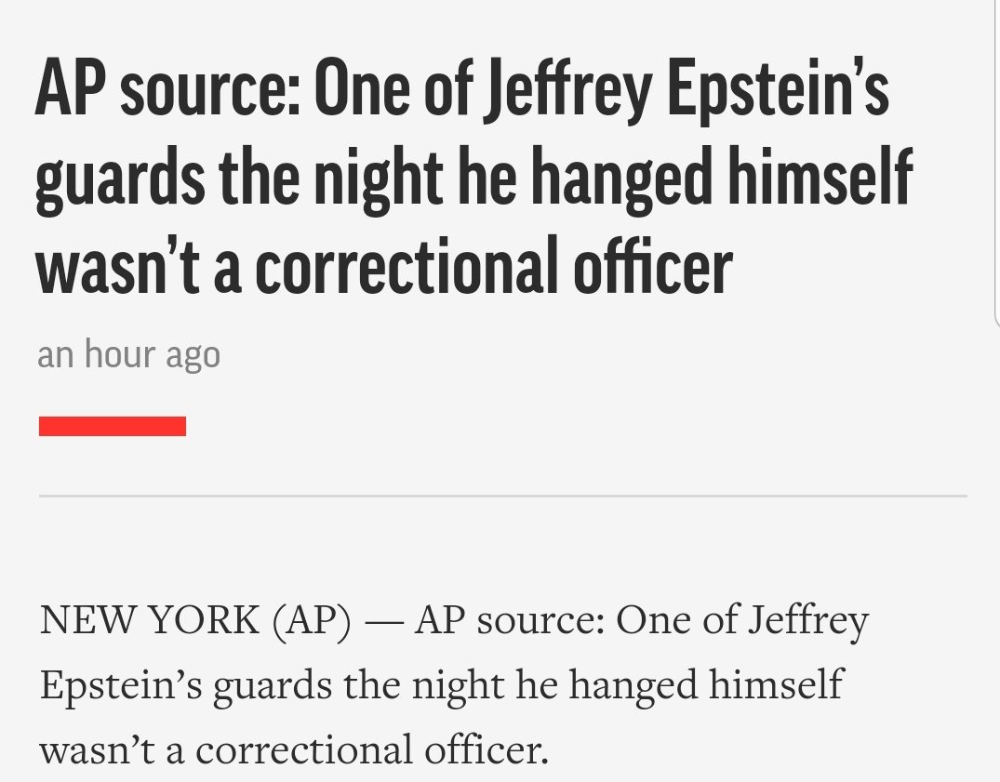
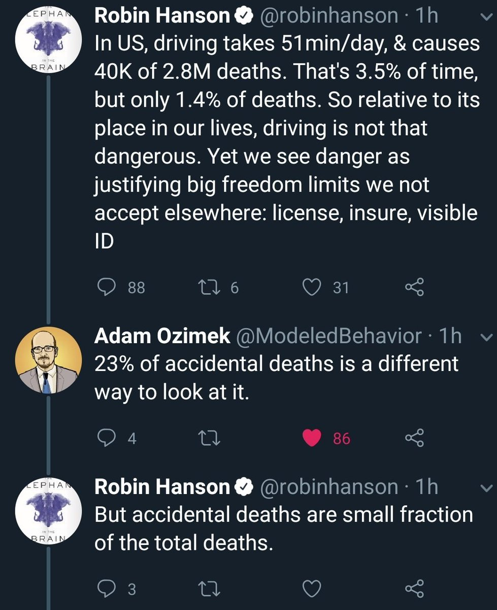

These are all the tweets and replies that @RadishHarmers made on 2019-8-13:
Id:
1161100838946922497
Timestamp:
2019-8-13 at 2:23:6
In reply to user:
@yeetgenstein
In reply to tweet ID:
1161099030849576962
Id:
1161111362090803201
Timestamp:
2019-8-13 at 3:4:55
In reply to user:
@Theophite
In reply to tweet ID:
1161102745346048000
Containing photo:

Id:
1161112875055886336
Timestamp:
2019-8-13 at 3:10:56
Id:
1161115937778688000
Timestamp:
2019-8-13 at 3:23:6
Id:
1161127935312637957
Timestamp:
2019-8-13 at 4:10:47
In reply to user:
@Styl_oh
In reply to tweet ID:
1161127503588577281
Id:
1161321892743143426
Timestamp:
2019-8-13 at 17:1:30
In reply to user:
@_Ramifications_
In reply to tweet ID:
1161321570486366210
Id:
1161374762620338177
Timestamp:
2019-8-13 at 20:31:35
Id:
1161375761925902336
Timestamp:
2019-8-13 at 20:35:33
In reply to user:
@dignified_n_old
In reply to tweet ID:
1161375473625997312
Containing photo:

Id:
1161388003044077568
Timestamp:
2019-8-13 at 21:24:12
Id:
1161390926599720960
Timestamp:
2019-8-13 at 21:35:49
In reply to user who no longer can be found (RIP).
In reply to tweet ID: 1161388403633659906
Id:
1161414667715190791
Timestamp:
2019-8-13 at 23:10:9
In reply to user:
@sairasameerarao
In reply to tweet ID:
1161353087988183046